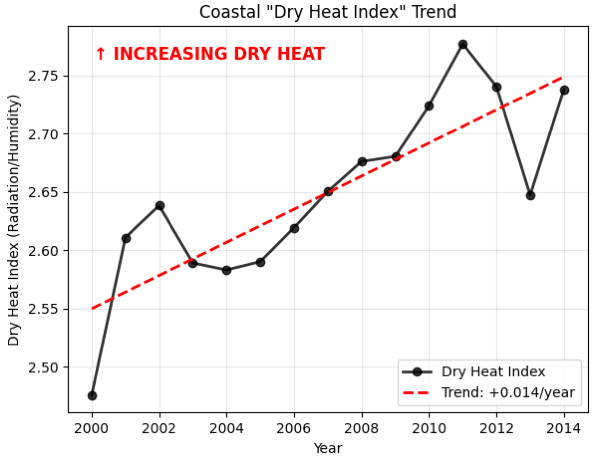

Visualization 1: Global Temperature & Precipitation Map (Simulated Predictive Data)
Visualization 2: Sea Surface Temperature

Visualization 3: Sea Temperature by Time

Visualization 4: Climate Trends in Temperate Coastal Zones
Placeholder for future visualization
Visualization 5: Coastal "Dry Heat Index" Trend

Placeholder for future visualization